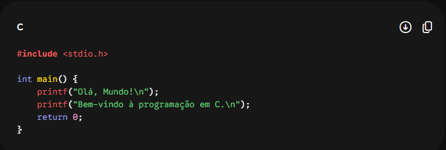
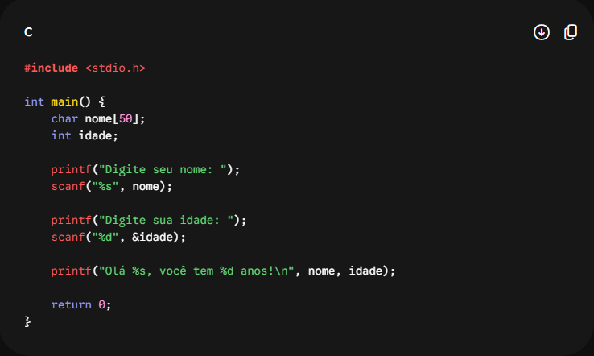
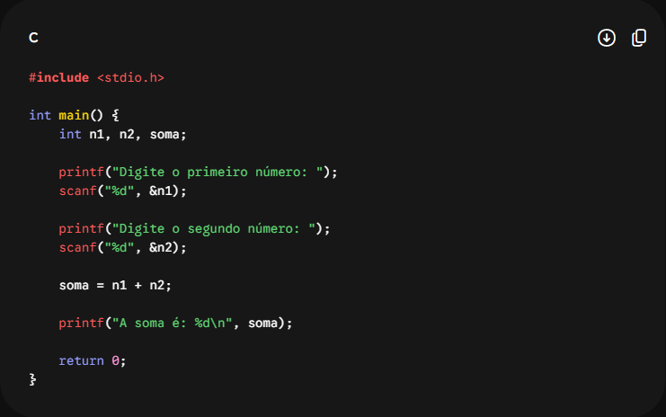
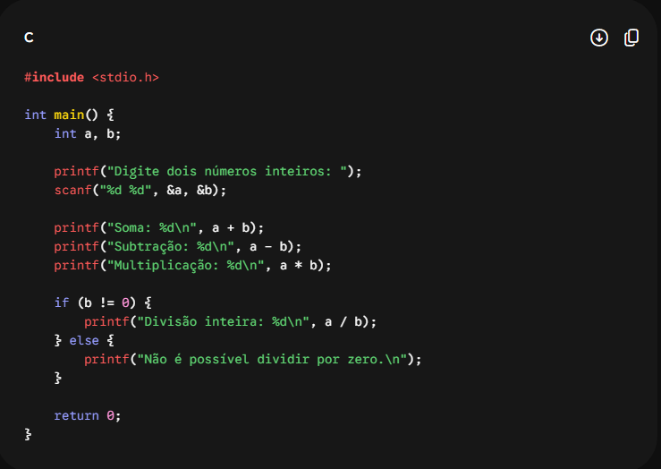
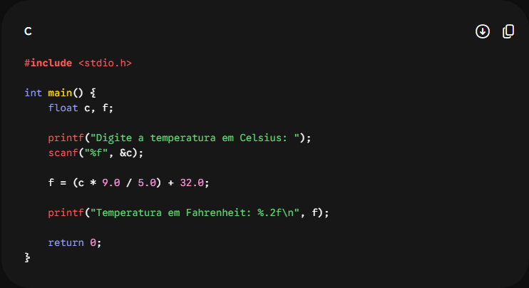
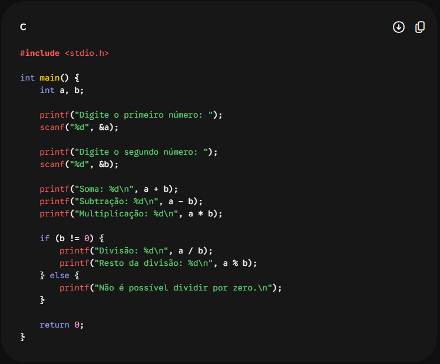
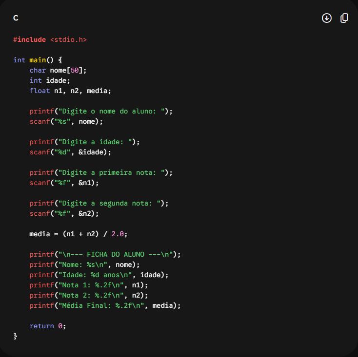

Descrição: Desenvolva um programa que apresente na tela as mensagens "Olá, Mundo!" e "Bem-vindo à programação em C."
Explicação: A biblioteca stdio.h permite utilizar recursos como a função printf. O caractere \n é utilizado para iniciar uma nova linha na saída.

Descrição: Peça ao usuário que informe seu nome e sua idade e, depois, apresente essas informações em uma mensagem.
Explicação: Para armazenar o nome, foi utilizado um vetor de char, enquanto a idade é guardada em uma variável do tipo int. A função scanf realiza a leitura dos valores informados.

Descrição: Receba dois números inteiros através do teclado e apresente o resultado da soma entre eles.
Explicação: Os valores inteiros são recebidos utilizando %d e, em seguida, o operador + é utilizado para realizar a adição.

Descrição: Informe dois números e calcule os resultados da soma, diferença, multiplicação e divisão inteira.
Explicação: O programa utiliza os operadores matemáticos +, -, * e /. Antes de realizar a divisão, verifica se o segundo valor é diferente de zero.

Descrição: Digite um número inteiro e descubra qual é o valor imediatamente anterior e o valor seguinte.
Explicação: Para encontrar o número anterior, basta diminuir 1 do valor informado. Para encontrar o próximo, adiciona-se 1.

Descrição: Informe duas notas com casas decimais e encontre a média entre elas.
Explicação: O tipo float é utilizado para trabalhar com valores decimais. A média é obtida através da soma das duas notas dividida por 2.

Descrição: Digite uma temperatura em Celsius e transforme o valor correspondente para Fahrenheit.
Explicação: A conversão é realizada através da fórmula F = (C * 9 / 5) + 32, utilizando números decimais para obter um resultado mais preciso.

Descrição: Informe as medidas da base e da altura de um retângulo para descobrir sua área.
Explicação: A área do retângulo é encontrada através da multiplicação entre a medida da base e a medida da altura.

Descrição: Informe quanto é recebido por hora e o total de horas trabalhadas para calcular o salário.
Explicação: O valor final é obtido multiplicando a quantidade de horas trabalhadas pelo valor correspondente a cada hora.

Descrição: Receba dois números e apresente os resultados das operações de soma, subtração, multiplicação, divisão e resto.
Explicação: O programa realiza as principais operações matemáticas. O símbolo % é utilizado para encontrar o resto de uma divisão entre números inteiros.

Descrição: Cadastre o nome, a idade e duas notas de um estudante e apresente uma ficha contendo todas essas informações junto com a média.
Explicação: Nesta atividade são combinados diferentes tipos de dados, como textos, números inteiros e valores decimais, formando uma apresentação organizada das informações do aluno.
